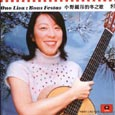

从去年开始，一种从南美流行而来的新音乐曲风Bossa Nova迅速地征服了都市里的听歌人。那种带着热带温暖的阳光、懒洋洋、听起来舒服又轻柔的音乐，实是令喜欢“小资”情调的人们倾倒。于是我们知道了生在南美的日本人小野丽莎的名字，她带来了清爽舒心的Bossa Nova音乐。我第一次买小野丽莎的CD是今年的4月13日下午，在南大生活区门口的私人音像店里。那是小野丽莎一张精选辑，收集了她从1997到2001年之间的一些歌曲。听音乐可能和心情有关，一阵一阵的。
纯美、浪漫、飘渺、迷人一直是情调音乐的重要指标，比如80年代的“恋人浪漫曲”，90年代的肯尼·G，还有一直到今天都还萦绕全球乐迷耳朵的恩雅。在新千年，出生于巴西的日本人小野丽莎带来一轮新的浪漫情调风潮，她的波萨诺瓦曲风的翻唱歌曲已成为众多文化白领的音乐新宠。
浪漫、阳光、海滩、椰树……这些都是听Lisa的歌所能想到的词，在新专辑 “美丽新世界”中收录的多首久唱不衰的经典情歌, 如”A Man and A Woman”、”Every Breath You Take”等, 这样的曲子, 配着慵懒, 写意的节奏, 很适合恋人们收听, 也是整天忙碌工作的上班族调节情绪的良药, 据说这样的音乐还被灌名为 “治疗系”音乐, 具有神奇般功效，不知是否灵验。
用一个词来形容”Bossa Nova”, 那就是―舒服。


从我个人的欣赏角度推荐下列几首小野丽莎的歌曲给大家，1、4、6、7、9、10是我特别喜欢的：
1.I WISH YOU LOVE—愿爱降临 专辑《美丽新世界》
2.CHEGA DE SAUDADE—思念满盈 专辑《卡瑞欧卡巴西爵士》
3.FLO DE YEMANJA—YAMANJA之花 专辑《蓝色夏威夷》
4.SMILE-微笑 专辑《香水》
5.DREAM-梦 专辑《DREAM》
6.PALPITE INFELIZ-不幸的预感 专辑《卡瑞欧卡巴西爵士》
7.MY CHERIE AMOUR-亲亲吾爱 专辑《蓝色夏威夷》
—-有一天我轻轻哼唱《MY CHERIE AMOUR》的旋律，朋友问我：“你知道中国哪部电影最恐怖吗？”我回答：“《夜半歌声》。”朋友说：“恩，是的。你刚才唱的时候让我想到《夜半歌声》了。”
8.BLUE HAWLL-蓝色夏威夷 专辑《蓝色夏威夷》
9.PIKAKE-茉莉 从未发表曲
10.ANGEL’S EYES-天使的眸子 专辑《DREAM》
初听小野丽莎的歌曲，感觉和我一直玩的模拟游戏《THE SIMS》本身带着的背景音乐差不多的风格。并且立刻就喜欢上这种Bossa Nova曲风的音乐了。我喜欢一边放音乐一边做事情，小野丽莎的歌曲是我这段时间主要的背景音乐*：-）。如果连小野丽莎的音乐都无法让你安静松弛，那么，你真的是不可救药了。小野丽莎在那张《蓝色夏威夷》中将巴西的BossaNova与夏威夷的Hula音乐相结合，除了一贯的慵懒、纯美之外，又带给大家更清凉，更明媚的舒适感觉。


关于Bossa Nova
Bossa Nova是葡萄牙文，Bossa是一种拉丁双人舞节奏，Nova则是“新”的意思。结合起来，Bossa Nova就是指一种融合巴西桑巴舞曲和美国酷派爵士的一种“新派爵士音乐”。它不象伦巴舞那样有强烈的节奏，它的曲风轻快舒适，旋律也较为简单，能呈现出非常浪漫的情调和煽情的气氛，十分迷人。
Bossa Nova的流行风潮是在20世纪五六十年代左右。当年南美爵士名家Antonio Carlos Jobim在海边邂逅一位摇曳生姿的美女，突发灵感，写下一曲“The Girl From Ipanema”。没想到这曲Bossa Nova的开山之作一炮而红，带动这种优雅热情又不失性感的音乐风格迅速风靡世界，在全世界掀起热浪，至今仍然经久不衰。
Bossa Nova在日本很受大众的欢迎，业界有许多乐手以演奏Bossa Nova为生，然而小野丽莎要比他们正宗一些。丽莎虽然是纯正的日本血统，却出生、成长于巴西圣保罗，从小在父亲经营的爵士俱乐部里耳濡目染，接受良好氛围的熏陶，故深得Bossa Nova的神髓。小野丽莎10岁回到祖国日本，15岁拿起吉他唱歌。自1989年出版返回日本后的第一张专辑以来，她都不以花俏和华丽的制作手法取胜，着重凸显出Bossa Nova曲风中所包容的节奏感与原音之美。充满自然质感的音色，质朴一如民谣歌曲的表演方式，10年以来已经成为小野丽莎的个人特色。
No Responses to “寂寞咖啡之（Lisa Ono)小野丽莎篇”
Leave A Reply
存档只读，评论已关闭。